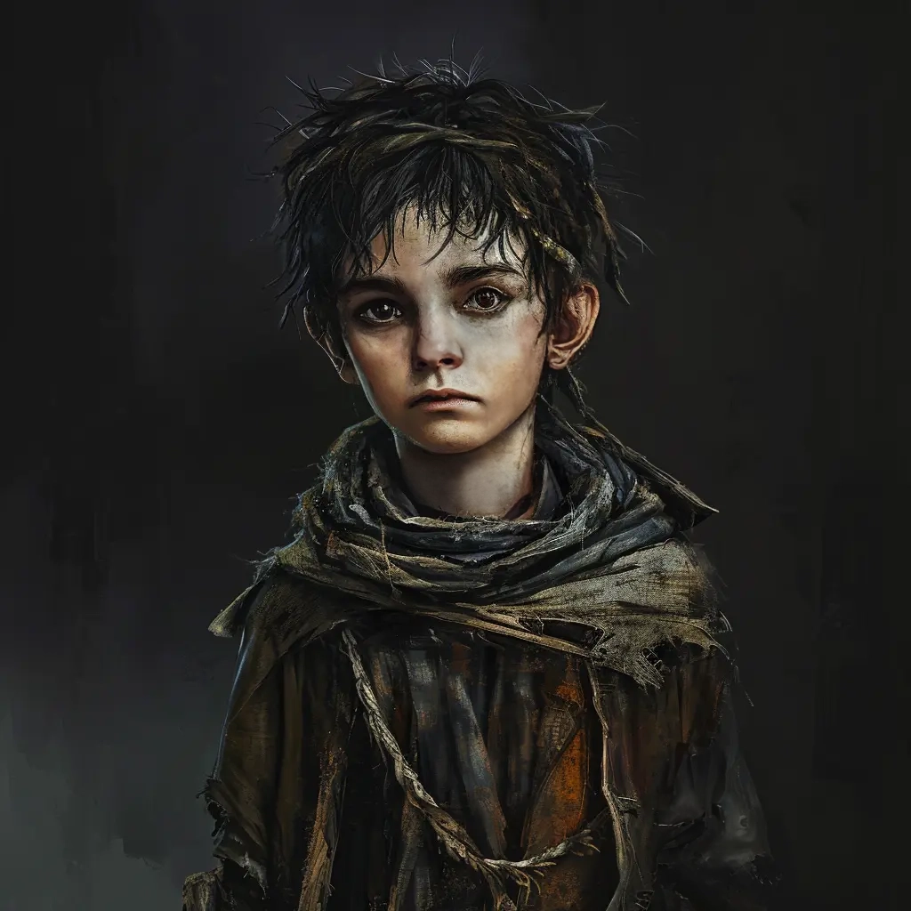

NSCs
Phillip
Waisenkind aus dem St. Andrals Waisenhaus

9 Jahre
- Das Kind hat Angst vor Malduk.
KI-Zusammenfassung
Beruf / Rolle
Waisenkind aus dem St. Andrals Waisenhaus.
Beschreibung
Keine gesicherte textliche Beschreibung in den lokalen Notizen.
Beziehungen
- St. Andrals Waisenhaus | Waisenkind aus dem
- Malduk | Das Kind hat Angst vor
- Phillip | St. Andrals Waisenhaus
- S44 - St. Andrals Waisenhaus: Malduk folgt Felix und erschreckt dabei Phillip
- S45 - Der Dunkelheit auf der Spur: Als der Schrei aus dem 1. Stock erschallt (Phillip erschreckt sich vor Malduk), will sie mit dem Schürhaken hoch. Angst um die Kinder
Historie
- Waisenkind aus dem St. Andrals Waisenhaus
- Das Kind hat Angst vor Malduk